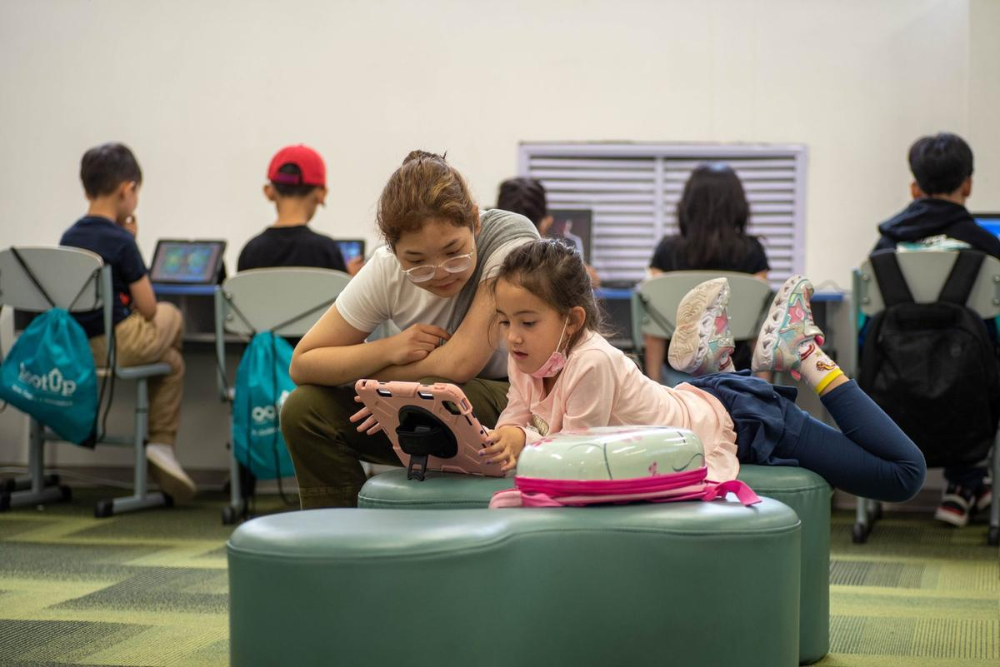
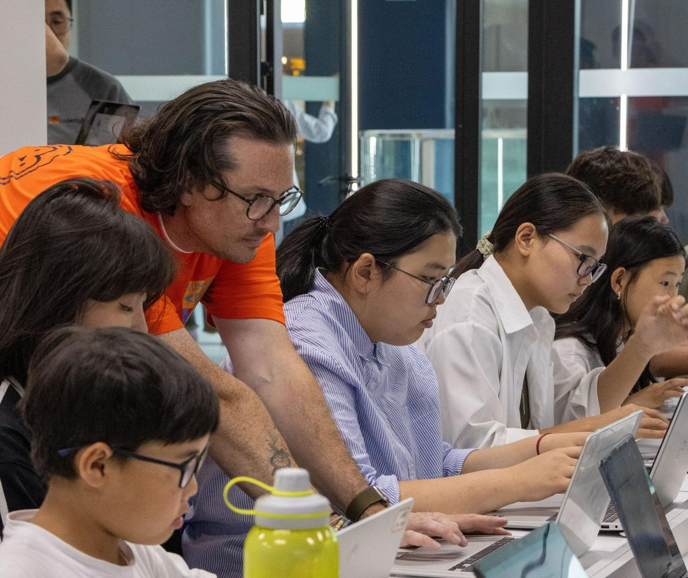
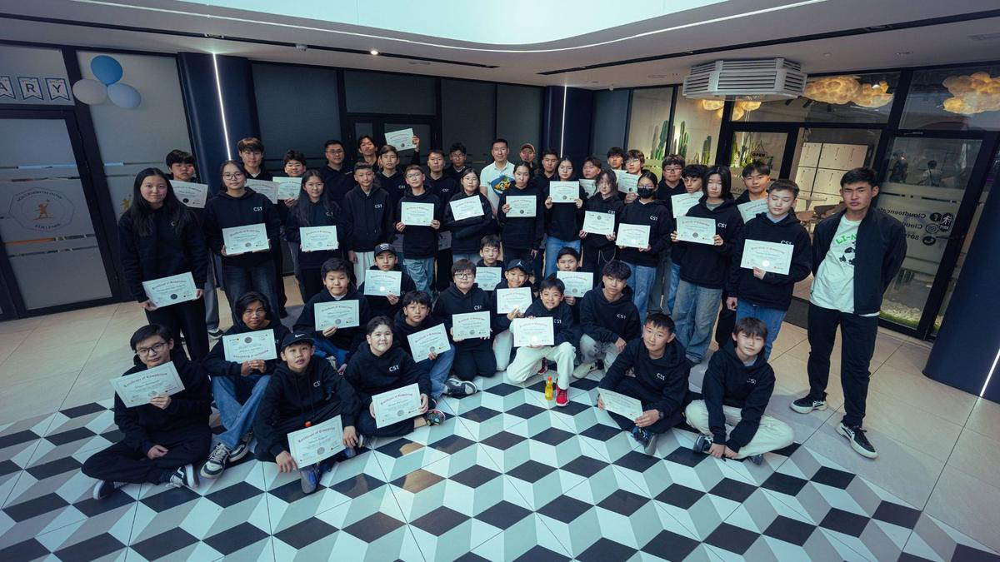

Манай хөтөлбөрүүд - Complete CS Pathway
Бид Америкийн стандарт компьютерын ухааны хөтөлбөрүүдийг бага ангиас эхлэн үе шаттайгаар хэрэгжүүлдэг ба тухайн сурагчийн ерөнхий эрдмийн түвшингээс хамаарсан asynchronous learning ганцаарчилсан арга барилаар хичээллэдэг онцлогтой.
- 1Block Coding
- 2Python Basics
- 3CS0
- 4CS1
- 5Future Intelligence Lab
Байнгын элсэлттэй



7+ нас
Байнгын элсэлттэй
Block Coding
Тоглоом төст даалгавраар компьютерын ухааны үндсийг танилцуулна.
Дэлгэрэнгүй →
9+ нас
Дараагийн элсэлт · 2026.12.21
Python Basics
Блок суурьтай Python-оос текст кодчлол руу шилжих анхны замнал.
Дэлгэрэнгүй →
11–18 нас
Дараагийн элсэлт · 2027.09.14
CS0
Carnegie Mellon-ийн хөтөлбөр — Python-оор график, хөдөлгөөнт төсөл бүтээнэ.
Дэлгэрэнгүй →
13–18 нас
Дараагийн элсэлт · удахгүй зарлана
CS1
Python-ийн дунд түвшин, CPCS замналын дараагийн шат.
Дэлгэрэнгүй →
15–19 нас
Future Intelligence Lab
Data Science-с Generative AI хүртэл — жилийн хөтөлбөр.
Дэлгэрэнгүй →